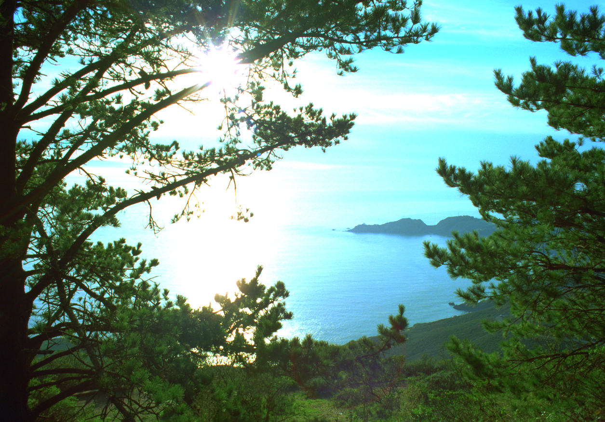
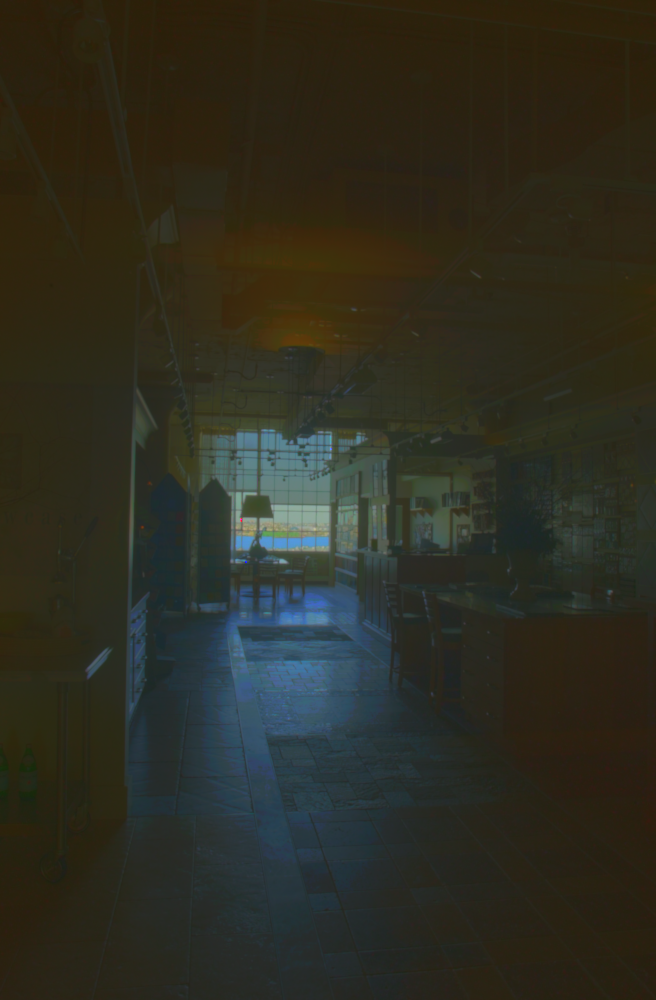
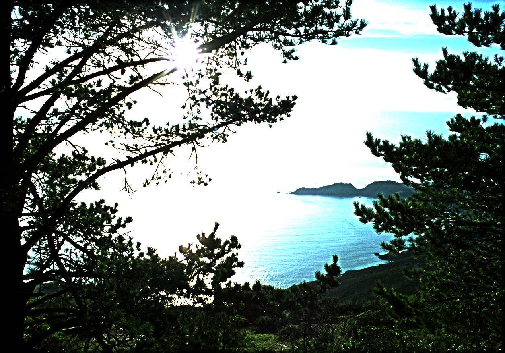
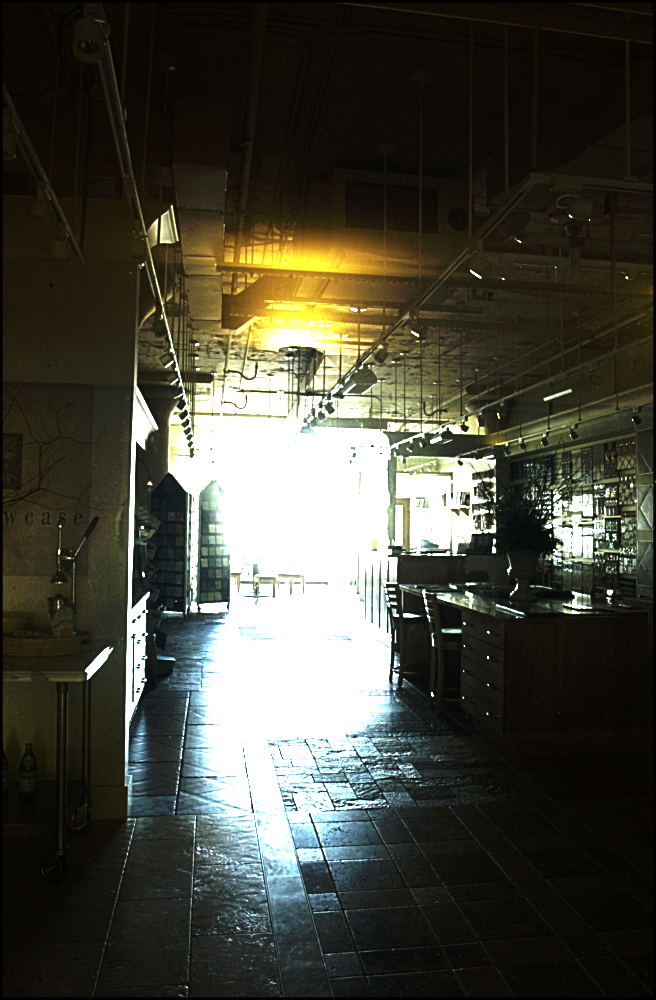
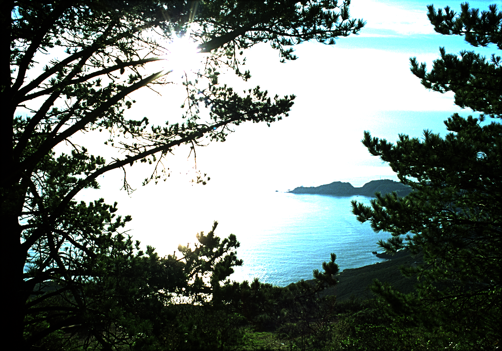
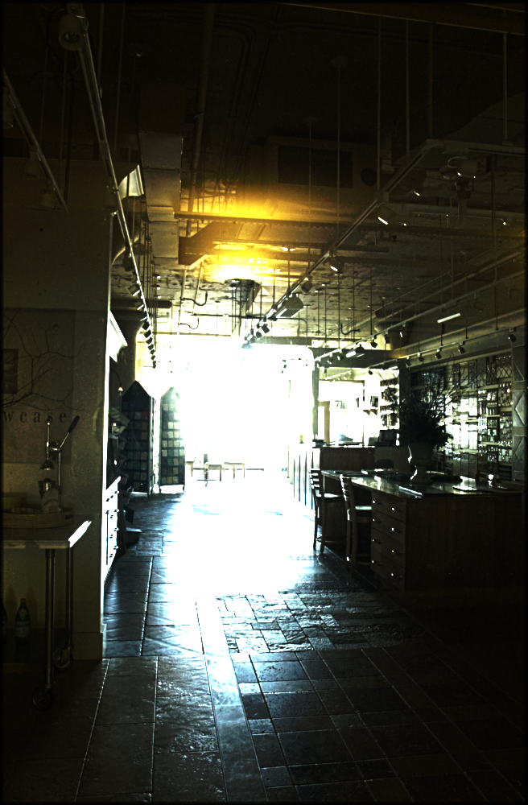

For my final project, I have developed a program to tone map HDR images using the point and region processing filtering. HDR images store a high dynamic range of values, typically five or more orders of magnitude. The code implements three different HDR tone mapping operators. The first tone mapping operator will be to gamma correct the image, in its log space of its luminance. The second tone mapping operator separately processes the low-pass and high-pass data of the log channel--which will be built using convolution. And finally, I have modified my convolution-based tone mapper to use a bilateral filter.
A complete explaination can be found at https://people.cs.clemson.edu/~levinej/courses/F15/6040/assignments/pa05.pdf
The following commands can be used in the terminal for complication, execution, and clean-up.
$> make
$> ./tonemap input.img -g gamma_value [output.img]
$> ./tonemap input.img -c [output.img]
$> ./tonemap input.img -b [output.img]
where [ ]'s indicate optional parameter.
$> make clean
Press "w" for writing displayed image.
Press "s" to switch between original image and toned image.
For boundary mechanism, I have used the padding technique. If the filter is of size x then I am adding a boundary of x/2 on all four sides of the image. I am setting the pixels that fall outside image boundary to black. The void padImage() method does this job.

Gamma Value: 0.45
Result Image: ocean_simple.png
Gamma Value: 0.15
Result Image: room_simple.png

Box Filter's Sigma Value: 10 Contrast Threshold: 5
Result Image: ocean_convolution.png
Box Filter's Sigma Value: 3 Contrast Threshold: 30
Result Image: room_convolution.png

Box Filter's Sigma Value: 5 Contrast Threshold: 5
Result Image: ocean_bilateral.png
Box Filter's Sigma Value: 5 Contrast Threshold: 30
Result Image: room_bilateral.png
CPSC 6040: Computer Graphics Images, Ioannis Karamouzas